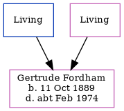

Gertrude Alice Fordham 1889 - c1974
[ Home ] | [ Calendar ] | [ Surnames Index ] | [ Census Index ] | [ Family History ]A domestic general servant and the child of William Fordham and Mary Baker, Gertrude Fordham was born in St Peters, Thanet, Kent, England on Oct 11, 18891,2,3,4,5,6,7.
During her life, she was living at Reading Street, St Peters, Thanet, Kent, England on Apr 5, 18918; in Staple, Kent, England on Mar 31, 19019; and at 36 Grove Road, Ramsgate, Kent on Apr 2, 191110.
She died c. Feb 1974 in Colchester, Essex, England5,6.
Parents
- William Henry
- Mary Ann Elizabeth
Citations
- 1891 England Census Online publication - Provo, UT, USA: The Generations Network, Inc., 2005.Original data - Census Returns of England and Wales, 1891. Kew, Surrey, England: The National Archives of the UK (TNA): Public Record Office (PRO), 1891. Data imaged from The National
- 1901 England Census Online publication - Provo, UT, USA: The Generations Network, Inc., 2005.Original data - Census Returns of England and Wales, 1901. Kew, Surrey, England: The National Archives of the UK (TNA): Public Record Office (PRO), 1901. Data imaged from the National
- 1911 England Census Online publication - Provo, UT, USA: Ancestry.com Operations, Inc., 2011.Original data - Census Returns of England and Wales, 1911. Kew, Surrey, England: The National Archives of the UK (TNA), 1911. Data imaged from the National Archives, London, England.
- England & Wales births 1837-2006 - Findmypast
- England & Wales deaths 1837-2007 - Findmypast
- England & Wales, Death Index: 1984-2005 Online publication - Provo, UT, USA: The Generations Network, Inc., 2007.Original data - General Register Office. England and Wales Civil Registration Indexes. London, England: General Register Office. © Crown copyright. Published by permission of the Cont
- England & Wales, FreeBMD Birth Index, 1837-1915 Online publication - Provo, UT, USA: The Generations Network, Inc., 2006.Original data - General Register Office. England and Wales Civil Registration Indexes. London, England: General Register Office. © Crown copyright. Published by permission of the Cont
- 1891 England, Wales & Scotland Census - Findmypast (was age 2 and the daughter of the head of the household)
- 1901 England, Wales & Scotland Census - Findmypast (was age 11 and the daughter-in-law of the head of the household)
- 1911 Census for England & Wales - Findmypast (was age 21 and a servant in the household)
Media
1891 England, Wales & Scotland Census - GBC/1891/0005914941
England & Wales births 1837-2006 - BMD/B/1889/2/AZ/000200/288
1901 England, Wales & Scotland Census - GBC/1901/0006672240
1911 Census for England & Wales - GBC/1911/RG14/04512/0009/3
England & Wales deaths 1837-2007 - BMD/D/1974/1/AZ/000441/114
Family Tree
Generated by ged2site. Last updated on Jun 11, 2024